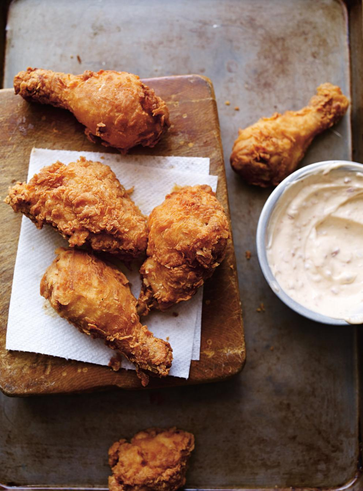

Fried Chicken

Description
Crispy fried chicken is a cinch to make at home, and this recipe for the comfort food classic is our best ever!
Ingredients
Marinade:
- 2 cups (500 ml) buttermilk
- 1 ½ tsp salt
- 1 ½ tsp onion powder
- 1 ½ tsp garlic powder
- 1 tsp cayenne pepper
- ½ tsp allspice
- 8 bone-in chicken drumsticks with skin
- 8 bone-in chicken thighs with skin
Coating:
- 3 cups (450 g) unbleached all-purpose flour
- 1 ½ tsp sweet smoked paprika
- 1 ½ tsp cayenne pepper
- 1 ½ tsp onion powder
- 1 ½ tsp garlic powder
- 1 ½ tsp dry mustard
- 1 ½ tsp salt
Spicy Mayonnaise:
- 1 cup (250 ml) mayonnaise
- 1 tbsp (15 ml) sambal oelek
- 1 tsp (5 ml) honey
Steps
Marinade:
- In a bowl, combine the buttermilk, salt and spices. Add the chicken and toss to coat. Cover and refrigerate for 12 hours.
Coating:
- In a large bowl, combine the flour, spices, and salt.
- Preheat the oil in a deep fryer to 325°F (165°C). Line a baking sheet with paper towels.
- Remove the chicken from the marinade without letting it all drip off. Dredge the chicken in the flour mixture. Dip for a second time in the marinade and dredge again in the flour mixture, shaking off any excess. Set aside on a baking sheet.
- Fry 4 to 5 pieces at a time for 15 minutes. Watch out for splattering. A kitchen thermometer inserted in the centre of a piece of chicken without touching bone should read 82°F (180°C). Drain on the paper towel. Repeat with the remaining chicken.
Spicy Mayonnaise:
- Meanwhile, in a bowl, combine all of the ingredients. Serve with the fried chicken.